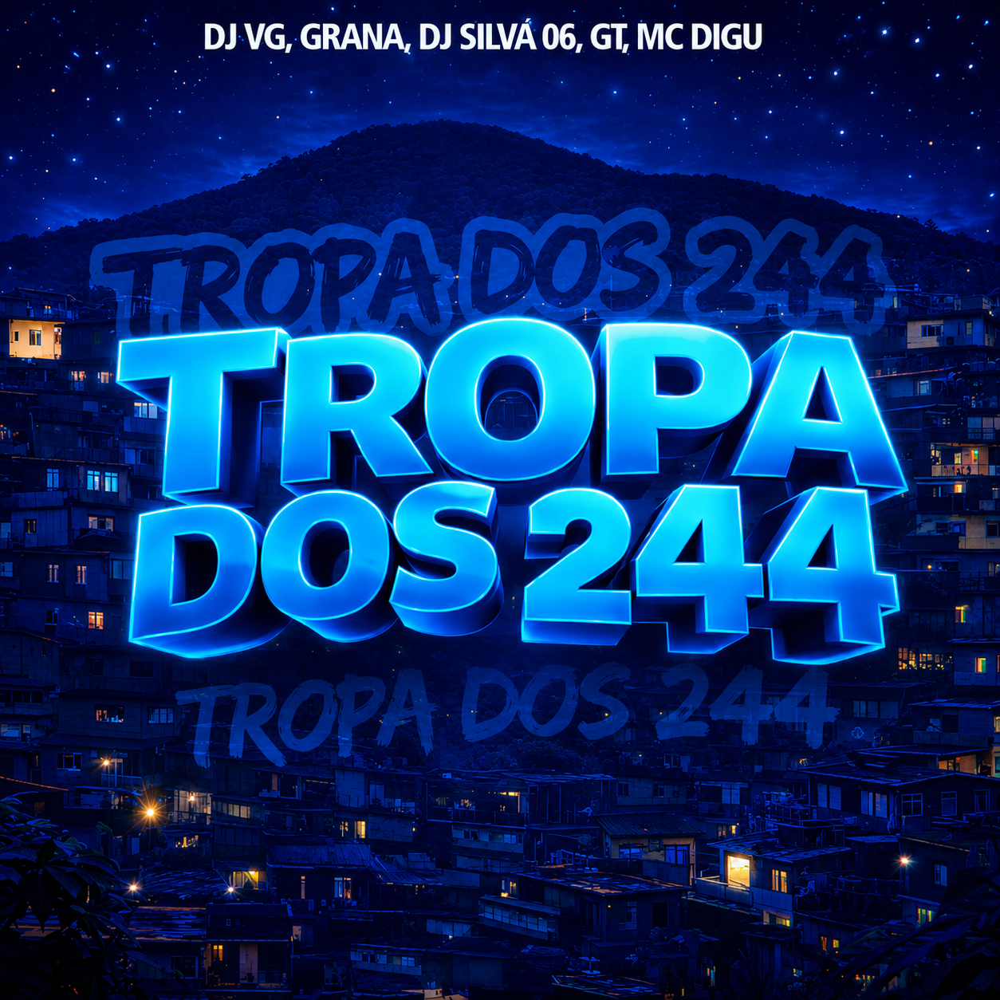

★ Mais tocada
Ouvir agora
Tropa Dos 244
Single — DJ Madracks Original

Single — DJ Madracks Original
Seleção pessoal do Madracks Original. Trap, hip-hop, drill e batidas que vivem no underground brasileiro. 171 faixas · 44 saves. Som que toca antes de virar hit.
Escutar playlistManda mensagem direto — booking, parcerias ou só pra trocar ideia.